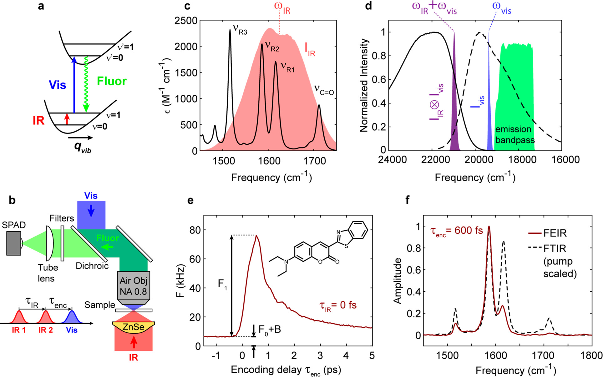

前言
准备开坑周更介绍一些paper来督促自己好好读文献。主要是对文章的研究背景、思路和内容做简单介绍（翻译文献），对必要的文章细节也会加以说明。所涉及的文章通常在分析化学、化学生物学、生物医学、分子动力学等领域。
关于参考文献，通常只列出当前阅读的文章，而忽略了对该文中引用文献的二次引用，除非我觉得它们特别重要。
水平所限，目前好多文章都看不太懂，所以讲的可能很浅，也提不出什么建设性建议或者批判性意见，还请（估计是不存在的）读者多多包涵。
背景
单分子光谱学对我们在化学、生物学和材料科学中描述分子现象的方式产生了深远的影响。对个体行为的研究揭示了隐藏在集合平均值内的信息，而访问平衡状态下可观察到的单个分子轨迹的能力提供了动力学信息，而无需同步（without the need for synchronization，没有理解什么意思）。自早期的开创性实验以来，由于明亮、无背景的信号以及灵敏的单光子检测器和现代显微镜工具，荧光已成为适应性最强的单分子检测方法。
尽管单分子荧光技术是革命性的，其有限的结构特异性上往往限制了该技术在化学问题上的应用，而这一缺点也启发了单分子振动技术的同步发展，后者通过振动谱带的频率和线型提供了对化学成键及特定分子接触敏感的信息。只是其中的大多数方法，包括表面与针尖增强拉曼光谱(SERS和TERS)、原子力红外光谱(AFM-IR)、红外散射型扫描近场光学显微镜(IR-sSNOM)，以及扫描隧道显微镜(STM)等，都需要与固体界面、探针或是纳米结构相接触，从而排除了它们在溶液相体系中的应用。
有鉴于此，芝加哥大学的A. Tokmakoff教授课题组提出了新的与溶液中的化学系统兼容的单分子振动光谱的策略，实验表明使用荧光编码的红外光谱可能具有单分子级别的灵敏度。
研究进展
将振动激发耦合到荧光电子跃迁是一种有吸引力的策略，它得益于远场荧光检测的实验和技术优势，包括溶液相兼容性。自1970年代以来，就已经存在双共振方案。该方案首先通过红外吸收或受激的拉曼泵浦激发振动，然后将分子上转换为发射电子激发态，以执行具有更高检测灵敏度的振动光谱学。
（中间这段进展没啥兴趣，直接跳过了，贴上原文）
Recently, Xiong et al. achieved SM detection with stimulated Raman excited fluorescence (SREF) spectroscopy, representing the first far-field SM vibrational measurement.
Our group has adapted an IR-pumped double resonance method, fluorescence-encoded IR (FEIR) spectroscopy, using broad-band femtosecond pulses to perform ultrafast Fourier transform vibrational spectroscopy, and recently developed a high-sensitivity experimental configuration incorporating confocal fluorescence microscopy to achieve 10–100 nM sensitivity in solution.
研究者基于上述结果执行荧光编码红外(FEIR)相关光谱，即荧光相关光谱(FCS)的IR振动类似物，表明FEIR光谱可以实现单分子灵敏度，即在任何给定时间能够检测平均少于一个分子对信号的贡献 。
实验原理

FEIR光谱通过图1a中所示的双共振方案进行操作。IR脉冲或脉冲对共振地将振动驱动到其第一激发态，此后，电子预共振可见脉冲将荧光团选择性地带入其电子激发态。因此，所得的荧光发射强度取决于红外场在基态电子状态下产生的激发振动种群，并用作编码振动信息的作用信号。在实践中，弱的IR振动吸收截面和皮秒寿命需要具有相当或更短持续时间的强脉冲，以确保整个激发过程具有抗松弛的能力。此外，高重复率有利于单光子计数，但必须与产生强烈、超短的中红外脉冲和潜在的加热伪影的技术要求相平衡。
FEIR测量采用图1b中总结的实验方案进行。研究者使用200-300 fs的中红外和1 MHz光纤激光器产生的可见脉冲，从而可以对振动弛豫过程以及多种模式的宽带激发进行时间分辨测量。为了获得强烈的激发场和较小的探头体积，红外和可见光光束以反向传播的几何形状通过高数值孔径(NA)光学器件聚焦到样品中，而衍射极限可见光焦点较小（340 nm 1/e^2^ 半径，0.2–30 pJ脉冲能量），在较大的IR焦点（9μm，50 nJ）内居中。用相同的可见物镜收集荧光，使其通过选择性带通滤光片，然后成像到单光子雪崩光电二极管(SPAD)上，其小有效面积用作共焦孔径。使用来自干涉仪的两个IR脉冲以傅立叶变换模式获取振动光谱。
实验结果与分析
对不起我太菜了这部分实在没有理解做了些什么，又是如何定量的，下次一定！
参考文献
(1) Whaley-Mayda, L.; Guha, A.; Penwell, S. B.; Tokmakoff, A. Fluorescence-Encoded Infrared Vibrational Spectroscopy with Single-Molecule Sensitivity. J. Am. Chem. Soc. 2021, 143 (8), 3060–3064. https://doi.org/10.1021/jacs.1c00542.
我好划水啊QAQ